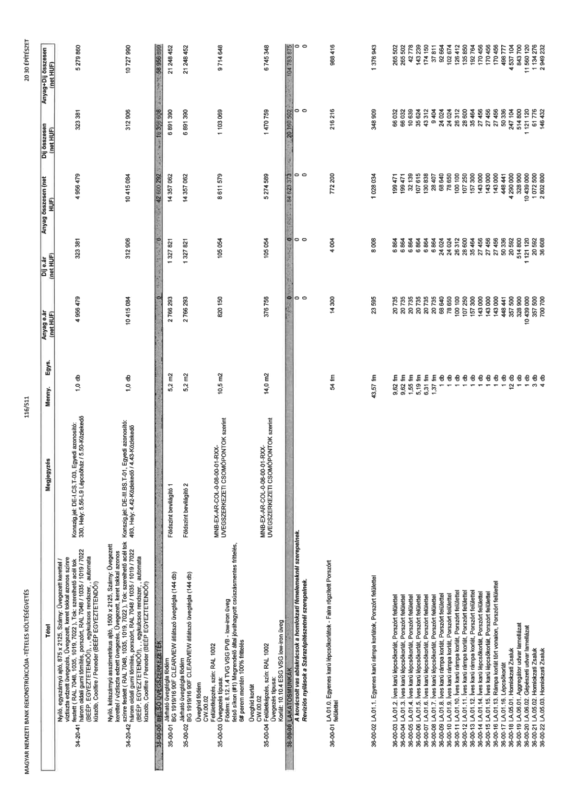

| Tétel | Megjegyzés | Menny. | Egys. | Anyag e.ár (net HUF) | Díj e.ár (net HUF) | Anyag összesen (net HUF) | Díj összesen (net HUF) | Anyag+Díj összesen (net HUF) |
|---|---|---|---|---|---|---|---|---|
| 34-20-41 Nyíló, egyszárnyú ajtó, 875 x 2125, Szárny: Üvegezett kerettel / víztiszta edzett tűzgátló üvegezés, Üvegezett, keret tokkal azonos színre festett ( RAL 7048, 1035, 1019, 7022 ), Tok: szerelhető acél tok három oldali gumi tömítés, porszórt, RAL 7048 / 1035 / 1019 / 7022 (BÉÉP. EGYEZTETENDŐ!), egykulcsos rendszer,, automata küszöb, Coolfire / Peneder (BÉÉP EGYEZTETENDŐ!) | Konszig.jel: DE-I.CS.T-03, Egyedi azonosító: 330, Hely: 5.56-L9. Lépcsőház / 5.50-Közlekedő | 1,0 | db | 4 956 479 | 323 381 | 4 956 479 | 323 381 | 5 279 860 |
| 34-20-42 Nyíló, kétszárnyú asszimetrikus ajtó, 1500 x 2125, Szárny: Üvegezett kerettel / víztiszta edzett üvegezés, Üvegezett, keret tokkal azonos színre festett ( RAL 7048, 1035, 1019, 7022 ), Tok: szerelhető acél tok három oldali gumi tömítés, porszórt, RAL 7048 / 1035 / 1019 / 7022 (BÉÉP. EGYEZTETENDŐ!), egykulcsos rendszer,, automata küszöb, Coolfire / Peneder (BÉÉP EGYEZTETENDŐ!) | Konszig.jel: DE-III.BS.T-01, Egyedi azonosító: 493, Hely: 4.42-Közlekedő / 4.43-Közlekedő | 1,0 | db | 10 415 084 | 312 906 | 10 415 084 | 312 906 | 10 727 990 |
| 35-00-00 BELSŐ ÜVEGSZERKEZETEK | NaN | NaN | NaN | 0 | 0 | 42 600 292 | 16 356 606 | 58 956 898 |
| 35-00-01 Járható üvegtégla födém BG 1919/16 90F CLEARVIEW átlátszó üvegtégla (144 db) | Földszint bevilágító 1 | 5,2 | m2 | 2 766 293 | 1 327 821 | 14 357 062 | 6 891 390 | 21 248 452 |
| 35-00-02 Járható üvegtégla födém BG 1919/16 90F CLEARVIEW átlátszó üvegtégla (144 db) | Földszint bevilágító 2 | 5,2 | m2 | 2 766 293 | 1 327 821 | 14 357 062 | 6 891 390 | 21 248 452 |
| 35-00-03 Üveghíd födém CW.00.02 Felületképzés, szín: RAL 1002 Üvegezés típusa: Födém: 8.12.1.4 TVG VSG PVB - low-iron üveg felső síkon (#1) Megrendelő által jóváhagyott csúszásmentes frittelés, 6# perem mentén 100% frittelés | MNB-EX-AR-COL-0-08-00-01-RXX- ÜVEGSZERKEZETI CSOMÓPONTOK szerint | 10,5 | m2 | 820 150 | 105 054 | 8 611 579 | 1 103 069 | 9 714 648 |
| 35-00-04 Üveghíd korlát CW.00.02 Felületképzés, szín: RAL 1002 Üvegezés típusa: Korlát: 10.10.4 ESG VSG low-iron üveg | MNB-EX-AR-COL-0-08-00-01-RXX- ÜVEGSZERKEZETI CSOMÓPONTOK szerint | 14,0 | m2 | 376 756 | 105 054 | 5 274 589 | 1 470 759 | 6 745 348 |
| 36-00-00 LAKATOSMUNKÁK | NaN | NaN | NaN | 0 | 0 | 84 623 373 | 20 160 502 | 104 783 875 |
| A kovácsolt vas ablakrácsok a homlokzati fémelemeknél szerepelnek. | Revíziós nyílások a Szárazépítészetnél szerepelnek. | 0 | - | 0 | 0 | 0 | 0 | 0 |
| 36-00-01 LA.01.0. Egyenes karú lépcsőkorlátok - Falra rögzített Porszórt felülettel | NaN | 54 | fm | 14 300 | 4 004 | 772 200 | 216 216 | 988 416 |
| 36-00-02 LA.01.1. Egyenes karú rámpa korlátok, Porszórt felülettel | NaN | 43,57 | fm | 23 595 | 8 008 | 1 028 034 | 348 909 | 1 376 943 |
| 36-00-03 LA.01.2 Íves karú lépcsőkorlát, Porszórt felülettel | NaN | 9,62 | fm | 20 735 | 6 864 | 1 994 471 | 66 032 | 265 502 |
| 36-00-04 LA.01.3 Íves karú lépcsőkorlát, Porszórt felülettel | NaN | 9,62 | fm | 20 735 | 6 864 | 1 994 471 | 66 032 | 265 502 |
| 36-00-05 LA.01.4 Íves karú lépcsőkorlát, Porszórt felülettel | NaN | 1,55 | fm | 20 735 | 6 864 | 32 139 | 10 639 | 42 778 |
| 36-00-06 LA.01.5 Íves karú lépcsőkorlát, Porszórt felülettel | NaN | 5,19 | fm | 20 735 | 6 864 | 107 615 | 35 624 | 143 239 |
| 36-00-07 LA.01.6 Íves karú lépcsőkorlát, Porszórt felülettel | NaN | 6,31 | fm | 20 735 | 6 864 | 130 838 | 43 312 | 174 150 |
| 36-00-08 LA.01.7 Íves karú lépcsőkorlát, Porszórt felülettel | NaN | 1,37 | fm | 20 735 | 6 864 | 28 407 | 9 404 | 37 811 |
| 36-00-09 LA.01.8 Íves karú rámpa korlát, Porszórt felülettel | NaN | 1 | db | 68 640 | 24 024 | 68 640 | 24 024 | 92 664 |
| 36-00-10 LA.01.9 Íves karú rámpa korlát, Porszórt felülettel | NaN | 1 | db | 78 650 | 24 024 | 78 650 | 24 024 | 102 674 |
| 36-00-11 LA.01.10. Íves karú rámpa korlát, Porszórt felülettel | NaN | 1 | db | 100 100 | 26 312 | 100 100 | 26 312 | 126 412 |
| 36-00-12 LA.01.11 Íves karú rámpa korlát, Porszórt felülettel | NaN | 1 | db | 107 250 | 28 600 | 107 250 | 28 600 | 135 850 |
| 36-00-13 LA.01.12 Íves karú rámpa korlát, Porszórt felülettel | NaN | 1 | db | 157 300 | 35 464 | 157 300 | 35 464 | 192 764 |
| 36-00-14 LA.01.14 Íves karú lépcsőkorlát, Porszórt felülettel | NaN | 1 | db | 143 000 | 27 456 | 143 000 | 27 456 | 170 456 |
| 36-00-15 LA.01.15 Íves karú lépcsőkorlát, Porszórt felülettel | NaN | 1 | db | 143 000 | 27 456 | 143 000 | 27 456 | 170 456 |
| 36-00-16 LA.01.13. Rámpa korlát tört vonalon, Porszórt felülettel | NaN | 1 | db | 143 000 | 27 456 | 143 000 | 27 456 | 170 456 |
| 36-00-17 LA.01.16. Lépcsőkorlát | NaN | 1 | db | 448 441 | 50 336 | 448 441 | 50 336 | 498 777 |
| 36-00-18 LA.05.01. Homlokzati Zsaluk | NaN | 12 | db | 357 500 | 20 592 | 4 290 000 | 247 104 | 4 537 104 |
| 36-00-19 LA.06.01. Agregátor udvar lamellázat | NaN | 1 | db | 328 900 | 514 800 | 328 900 | 514 800 | 843 700 |
| 36-00-20 LA.06.02. Gépészeti udvar lamellázat | NaN | 1 | db | 10 439 000 | 1 121 120 | 10 439 000 | 1 121 120 | 11 560 120 |
| 36-00-21 LA.05.02. Homlokzati Zsaluk | NaN | 3 | db | 357 500 | 20 592 | 1 072 500 | 61 776 | 1 134 276 |
| 36-00-22 LA.05.03. Homlokzati Zsaluk | NaN | 4 | db | 700 700 | 36 608 | 2 802 800 | 146 432 | 2 949 232 |
